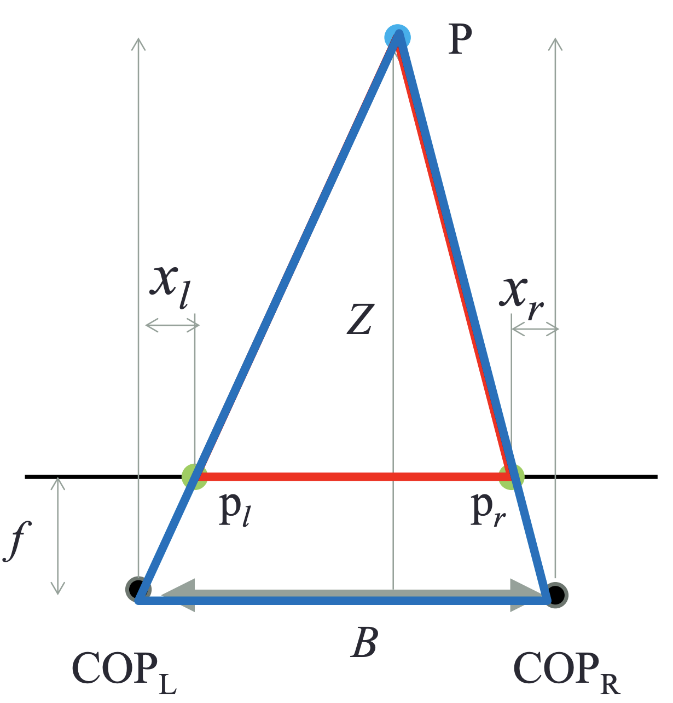
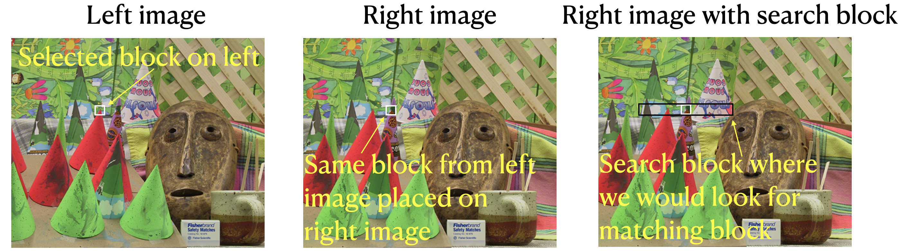
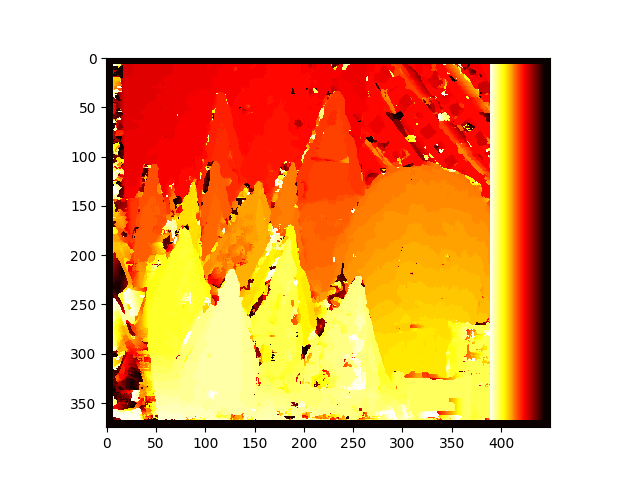
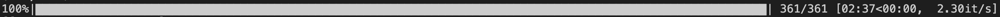
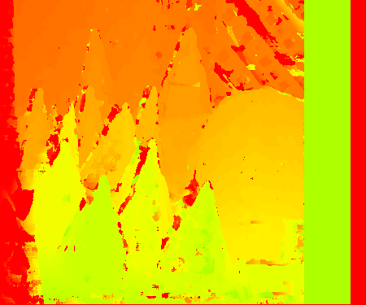

Stereo vision is the term used for the process of inferring 3D depth information from 2D images 1. 2D images may be from a Stereo Rig, usually consisting of two cameras slightly displaced horizontally similar to our two eyes. In fact, stereopsis 2 takes inspiration from our ability to infer depth information using our eyes. For a deeper explanation of stereo vision, you can refer to 3 4. A comprehensive and clear explanation of Stereo Vision is presented here 5. If you would like to understand depth calculation clearly, you can refer to 6. In this post, I will walk you through the implementation steps in python and subsequent parallel implementation in C++.
Depth Estimation
Before we proceed coding, I would like to explain how can we estimate depth using the disparity map? Without this motivation, I feel it is pointless to explain disparity map implementation. I had difficulty understanding a specific part of the derivation of depth equation which I will point out later. May be it’s just me, but, I thought of writing this up so that it may help others who may have similar question as I did. A simplified stereo setup with two cameras is shown here. It’s a bird’s eye view of the camera setup and a point \(P\) for which we are trying to estimate the depth/distance form the camera. To estimate depth from stereo implies that we need to estimate \(Z\) in the figure. \(Z\) is the distance of point \(P\) from the camera.

In the above setup, let \(C_{L}\) be the camera on the left and \(C_{R}\) be the camera on the right. Both these cameras have the same focal length \(f\). Distance between camera centers is \(B\). A line from point \(P\) to the camera center of \(C_{L}\) intersects the image plane at \(p_{l}\). A line from point \(P\) to camera center of \(C_{R}\) intersects \(C_{R}\)’s image plane at \(p_{r}\). Note that the triangles \(p_{l} P p_{r}\) and \(C_{L}PC_{R}\) are similar triangles. Since these triangles are similar, their ratio of base to height should be the same, i.e., \(\frac{B}{Z}\) = \(\frac{p_{l}p_{r}}{Z-f}\). From the figure, we have \(p_{l}p_{r}\) to be \(B - (x_{l}+x_{r})\). However, in all the derivations in multiple references, \(p_{l}p_{r}\) is told to be \(B - x_{l} + x_{r}\) which totally confused me. It is quite clear from the figure, to get \(p_{l}p_{r}\) we need to subtract (\(x_{l} + x_{r}\)) from \(B\).
Let’s say I would like to test my hypothesis that \(p_{l}p_{r} = B - (x_{l}+x_{r})\). When we use our depth sensing system in practice, we will have to feed in the focal length (\(f\)), base length (\(B\)), \(x_{l}\), and \(x_{r}\) to obtain \(Z\) which is the depth estimation for point \(P\). \(x_{l}\) is a positive value since it is to the right of the camera center line passing through the image plane which serves as the origin. Similarly, \(x_{r}\) is a negative number since it is to the left of the \(C_{R}\)’s center line which serves as the origin. Now, if we use the equation \(p_{l}p_{r} = B - (x_{l}+x_{r})\) with -ve value for \(x_{r}\) we end up adding \(x_{r}\) to \(B\) instead of subtracting, i.e., we will end up with \(p_{l}p_{r} = B - (x_{l}-x_{r}) = B - x_{l} + x_{r}\). This length is incorrect. Say, we used \(p_{l}p_{r} = B - (x_{l}-x_{r})\) and since we have \(x_{r}\) as negative, \(p_{l}p_{r} = B - (x_{l}-(-x_{r})) = B - (x_{l}+x_{r})\). This is the reason we have \(-x_{r}\) in the equation to estimate depth from stereo images. Now, a negative sign for \(x_{r}\) in the depth estimation equation makes sense to me. So, finally, to estimate depth, we can use the following equation \(Z=f \frac{B}{x_{l}-x_{r}}\).
Disparity Map
Depth is inversely proportional to disparity, i.e., from the depth estimation equation, we have \(Z \propto \frac{1}{x_{l}-x_{r}}\). As disparity (\(x_{l}-x_{r}\)) increases, \(Z\) decreases and for lower disparity (\(x_{l}-x_{r}\)), we would have higher \(Z\). This is intuitive if you hold your index finger near your eyes and alternate seeing from your left and right eyes. You will notice that your finger jumps a lot in your view compared to other distant objects. We will use a technique called block matching to find the correspondences between pixels in the two images as outlined in 7. Here is a summary of steps we need for computing disparity map:
- Input: Left image and right image (from perfectly aligned cameras) of width \(w\) and height \(h\), block size in pixels, and search block size
- Output: Disparity map of width \(w\) and height \(h\)
- Why do we need to specify block size and search block size?
- For every pixel in the left image, we need to find the corresponding pixel in the right image. Since pixel values may be noisy and is influenced by many factors such as sensor noise, lighting, mis-alignment, etc., we may have to rely on a group of surrounding pixels for comparison.
- Block size refers to the neighborhood size we select to compare pixels from left image and the right image specified as number of pixels in height and width. An example block is shown as a white box in both left and right images in Figure 2.
- Search block size refers to a rectangle (shown in black on the right image) in which we will search for best matching block. Notice that for the selected block from the left image, to get the corresponding image region, you will have to move the white smaller rectangle to the left in the black rectangle as shown in the third image in Figure 2.

- For a pixel in the left image, select the pixels in its neighborhood specified as block size from the left image.
- Compute similarity score by comparing each block from the left image (same size as block size) and each block selected from the search block in the right image. Slide block on the right image by one pixel within the search block (black rectangle). Record all the similarity scores.
- Find the highest pixel similarity score from the previous step. For the block with highest similarity, return the pixel location at the center of the block as the best matching pixel.
- If \(x_{l}\) is the column index of the left pixel, and the highest similarity score was obtained for a block on the right image whose center pixel has column index \(x_{r}\), we will note the disparity value of \(\left\|x_{l}-x_{r}\right\|\) for the location of left image pixel.
- Repeat the matching process for each pixel in the left image and note all the disparity values for the left image pixel index.
- We will start building the basic building blocks first and later combine these building blocks to compute disparity map.
Similarity metric
We need to define a notion of similarity between two blocks of pixels. Sum of absolute difference between pixel values is an intuitive metric for similarity. For example, the pair (3,5) is more similar compared to the pair (3,6) since the absolute difference between numbers in the first pair |3 - 5| < difference between numbers in the second pair |3 - 6|, i.e., 2 < 3. If there are multiple such values for comparison, we sum up the differences. Let’s implement sum of absolute difference method to be used for comparing blocks of pixels. We will loop over each row (\(i\)) and column (\(j\)) in both left and right blocks using \(\Sigma_{i,j} |B_{i,j}^{l} - B_{i,j}^{r}|\). Pixel blocks with lower sum of absolute difference value are more similar than pixel blocks with higher sum of absolute difference value.
import numpy as np
def sum_of_abs_diff(pixel_vals_1, pixel_vals_2):
"""
Args:
pixel_vals_1 (numpy.ndarray): pixel block from left image
pixel_vals_2 (numpy.ndarray): pixel block from right image
Returns:
float: Sum of absolute difference between individual pixels
"""
if pixel_vals_1.shape != pixel_vals_2.shape:
return -1
return np.sum(abs(pixel_vals_1 - pixel_vals_2))Block comparisons
We can compare a block of pixels from the left image with a block of pixels in the right image using the sum_of_abs_diff method we just defined. However, note that we need to compare a single block of pixels in the left image to multiple blocks of pixels on the right image (like we defined in Why do we need to specify block size and search block size?). These multiple blocks are to be selected within the search block shown as a black rectangle in Figure 2. We will slide the white box one pixel at a time starting from left most position within the black box to get candidate blocks for comparison from the right image. We note the block from the right image that has lowest sum of absolute difference score. The corresponding row and column index (y, x) is returned by our implementation here.
BLOCK_SIZE = 7
SEARCH_BLOCK_SIZE = 56
def compare_blocks(y, x, block_left, right_array, block_size=5):
"""
Compare left block of pixels with multiple blocks from the right
image using SEARCH_BLOCK_SIZE to constrain the search in the right
image.
Args:
y (int): row index of the left block
x (int): column index of the left block
block_left (numpy.ndarray): containing pixel values within the
block selected from the left image
right_array (numpy.ndarray]): containing pixel values for the
entrire right image
block_size (int, optional): Block of pixels width and height.
Defaults to 5.
Returns:
tuple: (y, x) row and column index of the best matching block
in the right image
"""
# Get search range for the right image
x_min = max(0, x - SEARCH_BLOCK_SIZE)
x_max = min(right_array.shape[1], x + SEARCH_BLOCK_SIZE)
#print(f'search bounding box: ({y, x_min}, ({y, x_max}))')
first = True
min_sad = None
min_index = None
for x in range(x_min, x_max):
block_right = right_array[y: y+block_size,
x: x+block_size]
sad = sum_of_abs_diff(block_left, block_right)
#print(f'sad: {sad}, {y, x}')
if first:
min_sad = sad
min_index = (y, x)
first = False
else:
if sad < min_sad:
min_sad = sad
min_index = (y, x)
return min_indexDisparity calculation
We can use the block comparison implementation to compute disparity values for every pixel between left and right images. As explained earlier, we will use a pixel blocks (neighboring pixels) to find pixel correspondences between left and right images. To do this, for a pixel at row \(r\) and column \(c\) from the left image, we select block of pixels \(b_{r, c}\) from the left image using BLOCK*SIZE parameter. We invoke block comparison for \(b*{r, c}\) and get back min_index containing row and column index of the best matching pixel from the right image, (y, x). For the pixel (r, c) of the left image, the best matching pixel from the right image is at (y, x). The disparity for pixel (r, c) is computed using \(|c - x|\). We need to compute disparity for each pixel of the left image and collect disparity values in a matrix of size width and height of the left/right image.
h, w = input_image.shape
disparity_map = np.zeros((h, w))
min_index = compare_blocks(y, x, block_left, right_array, block_size=BLOCK_SIZE)
disparity_map[y, x] = abs(min_index[1] - x)Disparity map
Let’s now setup a loop to go over each pixel in the left image, select a block of pixels from the left image, invoke compare_blocks, compute disparity values, and store disparity values in a matrix referred to as the disparity map. The indexing used here is quite lossy and a careful consideration may help in reducing loss of disparity values at image borders.
for y in tqdm(range(BLOCK_SIZE, h-BLOCK_SIZE)):
for x in range(BLOCK_SIZE, w-BLOCK_SIZE):
block_left = left_array[y:y + BLOCK_SIZE,
x:x + BLOCK_SIZE]
min_index = compare_blocks(y, x, block_left,
right_array,
block_size=BLOCK_SIZE)
disparity_map[y, x] = abs(min_index[1] - x)Here is a visualization of the disparity map computed for left and right images shown in Figure 3.

We use tqdm to show progress and note the time it takes to compute the disparity map in python. 
Disparity map computation using this python implementation took 2 minutes 37 seconds for left and right images of size (height=375, width=450). I was quite disappointed by this slow run-time for such a small image size and wondered about the practical use of my python implementation. There are many optimizations proposed in 8 and 9. The most obvious one for me is to use all the compute power on my machine. Since python cannot take advantage of all the cores on my machine, I was motivated to use C++ to parallelize the disparity map computation.
Parallel implementation in C++
Comparing pixel blocks from the left image (white box) with the pixel blocks from the right image can be done in parallel. A naive approach may be to create a thread pool and assign a single block comparison to a thread. Later, after block comparison for each pixel in the left image, we accumulate all the results into a disparity map. One concern is the cost of spawning a thread and later aggregating all the results which probably impedes the benefits of parallelizing this computation.
A slightly practical approach to parallelize this computation is to find the number of cores on the machine where you would compute the disparity map and split the computation accordingly. We can split disparity map computation into \(n\) chunks where \(n\) is the number of cores on your machine. Think of the left image and right image as 2D space split into \(n\) horizontal strips. We will compute disparity map for each strip pair (one from left image and another from right image) in parallel. Later, we will combine the \(n\) disparity maps into a single disparity map. Since this approach leverages all the cores on the machine, we should see a gain in performance.
Similarity metric and block comparisons
Let’s start with some basic methods we need. First, we need a method to compare blocks selected from left and right images. We will write a general method that can do block comparison for a given pixel location and pixel block width and height. Method compare_blocks implemented here returns the disparity value for a specified pixel index (row, col) and block size (width, height).
int compare_blocks(const int row, const int col, const int width, const int height, const Mat *left_img, const Mat *right_img)
{
int sad = 0;
int min_col = col;
// compute bounding box for left image with (row, col) as top left point
// compute bottom right point using (row, col)
int bottom_row = min(row + BLOCK_SIZE, height - 1); // zero indexed, hence using (height - 1)
int bottom_col = min(col + BLOCK_SIZE, width - 1);
// compute bounding box for right image block in which
// we will scan and compare left block
int col_min = max(0, col - SEARCH_BLOCK_SIZE);
int col_max = min(width, col + SEARCH_BLOCK_SIZE);
bool first_block = true;
int min_sad = 0;
for (int r_indx = col_min; r_indx < col_max; ++r_indx)
{
sad = 0;
for (int i = row; i < bottom_row; ++i)
{
int r_img_col = r_indx;
for (int j = col; j < bottom_col; ++j)
{
Scalar left_pixel = left_img->at<uchar>(i, j);
// Right image index should be updated using offset
// since we need to scan both left and right of the
// block from the left image
Scalar right_pixel = right_img->at<uchar>(i, r_img_col);
sad += abs(left_pixel.val[0] - right_pixel.val[0]);
++r_img_col;
}
}
if(first_block)
{
min_sad = sad;
min_col = r_indx;
first_block = false;
}
else
{
if(sad < min_sad)
{
min_sad = sad;
min_col = r_indx;
}
}
}
//cout << "min sad: " << min_sad << " ";
return col - min_col;
}Disparity calculation
We can invoke block comparisons for each pixel in the left image using the following set-up. Here, the start and end rows and columns of the chunks are passed as arguments. I will next describe the derivation of these indexes.
void compute_disparity(int start_chunk_row, int end_chunk_row, int start_chunk_col, int end_chunk_col, Mat *left_img, Mat *right_img, Mat *disparity_map)
{
int height = left_img->rows;
int width = left_img->cols;
for (int i = start_chunk_row; i < end_chunk_row; ++i)
{
for (int j = start_chunk_col; j < end_chunk_col; ++j)
{
int disp = compare_blocks(i, j, height, width, left_img, right_img);
if(disp < 0)
{
mtx.lock();
disparity_map->at<uchar>(i, j) = 0;
mtx.unlock();
}
else
{
mtx.lock();
disparity_map->at<uchar>(i, j) = disp;
mtx.unlock();
}
}
}
}Chunking
To chunk disparity map computation, we need to find the indices for each chunk we want to process. We will implement the method get_chunk_indices which takes maximum range of the index and number of chunks to produce. We will return the chunk indices.
vector<int> get_chunk_indices(int max, int num_chunks)
{
vector<int> chunks;
int step = max / num_chunks;
for (int i = 0; i < max; i = i + step)
{
chunks.push_back(i);
}
chunks[chunks.size() - 1] = max - 1;
return chunks;
}Spawning threads
We will spawn specified number of threads and on each thread we will compute disparity values for a single chunk which contains left and right image strips for which we are computing the disparity values. Each thread populates the disparity map and when all the threads finish, disparity_map will contain the final disparity map.
static const int num_threads = 8;
vector<int> height_chunks = get_chunk_indices(height, num_threads);
for (int i = 0; i < height_chunks.size() - 1; ++i)
{
t[i] = thread(compute_disparity, height_chunks[i], height_chunks[i + 1], 0,
width - 1, left_img, right_img, &disparity_map);
}Here is the console output for the parallelized computation of disparity map. Complete disparity map calculation took just 6 seconds! Just to recap, with the python implementation, disparity map calculation took 2 minutes, 37 seconds. Using this C++ implementation, we get 26X gain in speed for computing the disparity map.
$ g++ $(pkg-config --cflags --libs opencv4) -std=c++11 stereo_vision_parallel.cpp -o stereo_vision
$ ./stereo_vision data/left.png data/right.png
Left image shape: [450 x 375]
Right image shape: [450 x 375]
Initial disparity map: [450 x 375]
Total entries in disparity map: 168750
Using 8 threads for computation...
Execution time: 6 seconds (0.1) minsHere the visualization of the disparity map calculated using the parallel implementation. 
Conclusion
We were able to implement the basic idea of Stereo Vision to compute disparity values. Hope you enjoyed translating Stereo Vision ideas to working code! Without any optimizations, the python implementation is too slow for any practical use. With parallel implementation, we reduced the running time for 375 by 450 pixels image form 2 minutes 37 seconds to just 6 seconds. Even though this is a significant jump in performance, it is far from practical use for any real-time systems that rely on stereo to estimate its environment. For example, a robot using vision guided navigation cannot afford to spend 6 seconds for processing two frames (one from left and and another from right camera). A far more optimized computation is necessary especially for real-time consumption of depth information.
All the source code presented in this post can be found here
References
Footnotes
Forsyth, D., & Ponce, J. (2003). Computer vision: A modern approach. Upper Saddle River, N.J: Prentice Hall.↩︎
Forsyth, D., & Ponce, J. (2003). Computer vision: A modern approach. Upper Saddle River, N.J: Prentice Hall.↩︎
http://mccormickml.com/2014/01/10/stereo-vision-tutorial-part-i/↩︎
http://mccormickml.com/assets/StereoVision/Stereo%20Vision%20-%20Mathworks%20Example%20Article.pdf↩︎
http://vision.deis.unibo.it/~smatt/Seminars/StereoVision.pdf↩︎
https://www.cc.gatech.edu/~afb/classes/CS4495-Fall2013/slides/CS4495-06-Stereo.pdf↩︎
http://mccormickml.com/2014/01/10/stereo-vision-tutorial-part-i/↩︎
http://mccormickml.com/2014/01/10/stereo-vision-tutorial-part-i/↩︎
http://mccormickml.com/assets/StereoVision/Stereo%20Vision%20-%20Mathworks%20Example%20Article.pdf↩︎